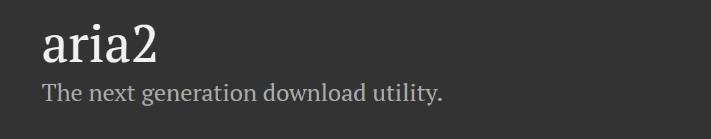
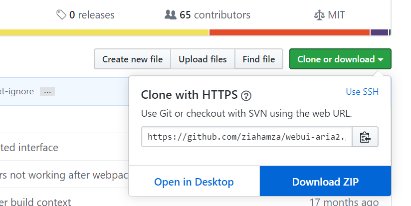
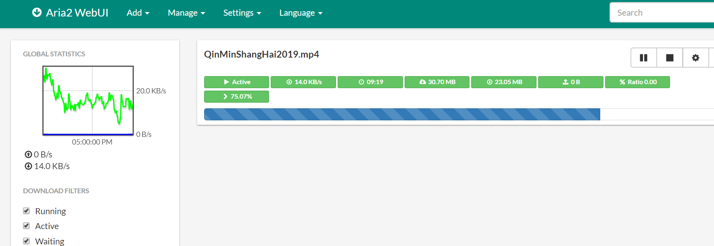

aria2 使用指南

aria2 是一款轻量级的下载器，支持 HTTP/HTTPS, FTP, SFTP, BitTorrent and Metalink 等多种协议。
它有如下特点：
- 多节点链接：下载一个文件可以同时链接多个源来提速
- 轻量级：占用系统资源极少，一般下载任务内存占用 10mb 内
- 全功能的 BitTorrent 客户端：支持 DHT, PEX, Encryption, Magnet URI, Web-Seeding, Selective Downloads, Local Peer Discovery and UDP tracker
- 支持 metalink 链接
- 支持远程控制：支持 RPC 界面控制 aria2 进程
官网：https://aria2.github.io/
GitHub 主页：https://github.com/aria2/aria2
webui-aria2：https://github.com/ziahamza/webui-aria2
aria2 下载安装
从官方发布页下载对应平台的最新版包，我是 Windows x64 系统下载了 aria2-1.35.0-win-64bit-build1.zip：
https://github.com/aria2/aria2/releases/
解压压缩包到本地，我的解压目录是：C:\Users\Marco Nie\Application\aria2
aria2c.exe 就是 aria2 主程序。
命令行使用
aria2 原生支持命令行控制，终端里切换到 aria2 目录，执行简单的下载指令：
aria2c http://www.file.zip
由于命令行方式不适合管理和使用，所以这里介绍以 webUI 的方式控制 aria2。
webui-aria2
webui-aria2 是一个官方推荐的 web RPC 控制器，图形化的界面方便管理进程。
GitHub 主页：https://github.com/ziahamza/webui-aria2
下载仓库包到本地：

解压压缩包到本地，我放在了 aria2 文件夹目录，在 docs 文件夹下启动 indix.html 就打开了 web 控制面板：

这时候页面会报错，因为 aria2 源程序还没有启动，下面介绍配置方法。
配置文件
在 aria2 根目录下新建三个文件：aria2.conf，aria2.session，aria2.log
- aria2.conf：aria2 的配置参数文件，定义了 aria2 的启动参数
- aria2.session：会话信息文件，用来进行断点续传
- aria2.log：日志文件
aria2.conf 推荐设置内容如下(自行修改里面的目录)：
# 文件的保存路径(可使用绝对路径或相对路径), 默认: 当前启动位置
dir=C:\Users\Marco Nie\Downloads
# 从会话文件中读取下载任务
input-file=C:\Users\Marco Nie\Application\aria2\aria2.session
# 在Aria2退出时保存`错误/未完成`的下载任务到会话文件
save-session=C:\Users\Marco Nie\Application\aria2\aria2.session
#下载完成后删除.aria2的同名文件
# on-download-complete=C:\Users\Marco Nie\Application\aria2\delete_aria2
# Windows 下不关闭的话会出现 Timeout while contacting DNS servers
async-dns=false
# 启用磁盘缓存, 0为禁用缓存, 需1.16以上版本, 默认:16M
#disk-cache=32M
#disk-cache=32M
# 文件预分配方式, 能有效降低磁盘碎片, 默认:prealloc
# 预分配所需时间: none < falloc ? trunc < prealloc
# falloc和trunc则需要文件系统和内核支持
# NTFS建议使用falloc, EXT3/4建议trunc, MAC 下需要注释此项
file-allocation=prealloc
# 断点续传
continue=true
## 下载连接相关 ##
# 最大同时下载任务数, 运行时可修改, 默认:5
max-concurrent-downloads=10
# 同一服务器连接数, 添加时可指定, 默认:1
max-connection-per-server=10
# 最小文件分片大小, 添加时可指定, 取值范围1M -1024M, 默认:20M
# 假定size=10M, 文件为20MiB 则使用两个来源下载; 文件为15MiB 则使用一个来源下载
min-split-size=10M
# 单个任务最大线程数, 添加时可指定, 默认:5
split=5
# 整体下载速度限制, 运行时可修改, 默认:0
#max-overall-download-limit=0
# 单个任务下载速度限制, 默认:0
#max-download-limit=0
# 整体上传速度限制, 运行时可修改, 默认:0
#max-overall-upload-limit=0
# 单个任务上传速度限制, 默认:0
#max-upload-limit=0
# 禁用IPv6, 默认:false
disable-ipv6=true
# 定时保存会话, 0为退出时才保存, 需1.16.1以上版本, 默认:0
save-session-interval=60
## RPC相关设置 ##
# 启用RPC, 默认:false
enable-rpc=true
# 添加任务后默认暂停下载
pause=false
# 允许所有来源, 默认:false
rpc-allow-origin-all=true
# 允许外网访问, 默认:false
rpc-listen-all=true
rpc-save-upload-metadata=true
# 设置的RPC授权令牌, v1.18.4新增功能, 取代 --rpc-user 和 --rpc-passwd 选项
rpc-secure=false
#rpc-secure=<taken>
# RPC监听端口, 端口被占用时可以修改, 默认:6800
rpc-listen-port=6800
# 设置的RPC访问用户名, 此选项新版已废弃, 建议改用 --rpc-secret 选项
#rpc-user=<USER>
# 设置的RPC访问密码, 此选项新版已废弃, 建议改用 --rpc-secret 选项
#rpc-passwd=<PASSWD>
## BT/PT下载相关 ##
# 当下载的是一个种子(以.torrent结尾)时, 自动开始BT任务, 默认:true
#follow-torrent=true
# BT监听端口, 当端口被屏蔽时使用, 默认:6881-6999
listen-port=51413
# 单个种子最大连接数, 默认:55
#bt-max-peers=55
# 打开DHT功能, PT需要禁用, 默认:true
enable-dht=true
# 打开IPv6 DHT功能, PT需要禁用
#enable-dht6=false
# DHT网络监听端口, 默认:6881-6999
#dht-listen-port=6881-6999
# 本地节点查找, PT需要禁用, 默认:false
bt-enable-lpd=true
# 种子交换, PT需要禁用, 默认:true
enable-peer-exchange=false
# 每个种子限速, 对少种的PT很有用, 默认:50K
#bt-request-peer-speed-limit=50K
# 客户端伪装, PT需要
#peer-id-prefix=-TR2770-
user-agent=Transmission/2.92
#user-agent=netdisk;4.4.0.6;PC;PC-Windows;6.2.9200;WindowsBaiduYunGuanJia
# 当种子的分享率达到这个数时, 自动停止做种, 0为一直做种, 默认:1.0
seed-ratio=1.0
#作种时间大于30分钟，则停止作种
seed-time=30
# 强制保存会话, 话即使任务已经完成, 默认:false
# 较新的版本开启后会在任务完成后依然保留.aria2文件
#force-save=false
# BT校验相关, 默认:true
#bt-hash-check-seed=true
# 继续之前的BT任务时, 无需再次校验, 默认:false
bt-seed-unverified=true
# 保存磁力链接元数据为种子文件(.torrent文件), 默认:false
bt-save-metadata=true启动 aria2
上述文件设置完毕后，就可以启动 aria2 了，在终端执行如下命令：
cd /to/aria2/path
aria2c --conf-path=aria2.conf
然后启动 webui-aria2 的 index.html 网页，就可以正常使用了。
开机自启动
可以建立脚本来实现开机自启动，在 aria2 目录新建 bat 文件，内容如下：
@echo off
if "%1" == "h" goto begin
mshta vbscript:createobject("wscript.shell").run("""%~nx0"" h",0)(window.close)&&exit
:begin
REM
cd %USERPROFILE%\Application\aria2
aria2c --conf-path=aria2.conf
exit建立脚本快捷方式，将快捷方式放到开机启动文件夹内即可，Windows 10 开机启动目录为：%APPDATA%\Microsoft\Windows\Start Menu\Programs\Startup